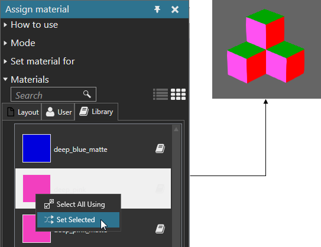

Setting Material
You can set the material of one or more objects in the 3D world. This is similar to assigning, but you are setting the material of multiple objects.
- On the Modeling tab, in the Geometry group, click the Tools arrow, and then under Material, click Assign.
- In the Assign material task pane, expand Materials, and then find a material.
- Right-click the material, and then click Select All Using.
- Right-click another material, and then click Set Selected. Objects with the selected material will be assigned the other material.
Example. Change selected material of faces to pink
